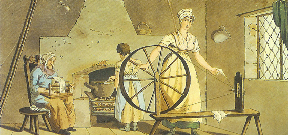
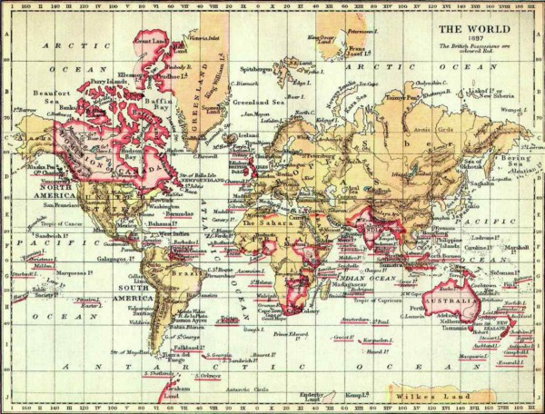

Drew French
Prof. Tiede
Global History 10.3
31 Mar. 2017
Newtonian Culture and the Industrial Revolution
Sir Isaac Newton's new math and science was the catalyst for the Industrial Revolution. Long after Newton's death, a culture of technological advancement developed in England and eventually spread globally. This culture—common knowledge of Newton's new higher math and laws of motion—gave mankind the tools needed for the Industrial Revolution and changed the world forever.

Sir Isaac Newton (1643 - 1727) (Sir 1)
Isaac Newton is the author of "Method of Fluxions", which explains calculus, and the Principia, which contained theorems on parts of Newton’s new math—calculus—and new science—laws of motion/physics.
Like many theoretical physicists even today, Newton had to develop a new math to discover/convey/communicate his new science. After his death, due to a priority dispute over the invention of calculus, a.k.a. The Calculus Wars, Newton’s followers passionately promoted Newton’s new math and science. These new “tools” were embraced by many--general public and scholars alike-- and lead to the many inventions of the IR. For this, the Newtonian Culture was born and spread around the world. Most people consider Sir Isaac Newton to be the “Father of Modern Science”.
A Course of Experimental Philosophy (1744) by J. T. Desaguilers (Desaguliers 428-429)
A page from a book by one of Newton's experimental assistants. J. T. Desaguliers promoted the new Newtonian math and science in his 500-page book. Historians have proven that this illustration led to the invention of the steam engine and the waterwheel.
J. T. Desaguliers was an experimental assistant to Isaac Newton and after Newton’s death, promoted the new Newtonian math and science via his 500 page book. Additionally Desaguliers educated the public through lectures to “almost any skilled craftsman, merchant, or self-improving listener” (Dobbs 78) at the beginning of the spread of the Newtonian Culture. There are many illustrations in Desagulier’s A Course of Experimental Philosophy (science was called philosophy at the beginning of the IR). This one is significant because it illustrates how humans struggle against gravity and inertia, and how these forces can be measured. The Newtonian mechanics in this illustration lead to the invention of the steam engine and waterwheel decades later (Dobbs 79), due to to the spread of the Newtonian Culture.

A picture of Thomas Newcomen. (Thomas 1)
Although an ironmonger (nail maker and tool seller to mining industry) from rural England, Newcomer was familiar with Sir Isaac Newton’s new science through Robert Hooke of the Royal Society. Newton’s new science—physics—required higher mathematics skills and England’s schools had been teaching Newton’s new math since 1720, thanks to the popularity of Newton’s book, the Principia, and the Newtonian Culture that sprang up after Newton’s death.

A sketch of Thomas Newcomen's 1856 model of the steam engine, which was used to pump water out of mines. (Thomas 1)
Newcomen’s steam engine is first functioning steam engine. Newcomen’s first steam engine was improved upon and lead to James Watt’s steam engine and locomotive travel.
Although many others had tried before him, it took Thomas Newcomer ten years to develop the first functioning steam engine. Newcomer was added by his friend, John Calley (or Cawley) who was a plumber. Newcomen’s early steam engine was built to pump water out of England’s flooded coal and tin mines and was pivotal to the growth of the Industrial Revolution around the world. Newcomen’s first steam engine was improved upon and lead to James Watt’s steam engine and locomotive travel.

“Woman Spinning” is an engraving of a painting by English artist George Walker (Walker 1).
In 1814, Walker was commissioned by a local bookseller to produce a series of paintings known as The Costume of Yorkshire. The paintings in this series captured typical scenes from local and rural English life. This engraving is an example of the textile cottage industry before the Industrial Revolution. In Walker’s typical textile cottage industry scene, multiple people work to make one garment—dyeing, spinning and weaving.

Factory workers using new power loom technology to further increase the rate of clothing production. (Industrial 1)
This power loom is from Hulton Archive/Getty Images.
Before the Industrial Revolution, people crafted handmade items and spun thread on a hand loom. In the Industrial Revolution, this process was mechanized, and power looms were invented to speed up the spinning process. Here is an example of a power loom that required the operation of only a few women.

This is an example of one of the tickets to the Great Exhibition. (Great 1)
This is HRH Prince Albert’s ticket to the 1851 international Great Exhibition of the Works of Industry to All Nations. Queen Victoria’s Consort organized this celebration of the latest, new, modern industrial technology and design. The ticket is numbered “I” and held in a red leather pocket case. It is on display at the Victoria and Albert Museum, England.
This exhibition is responsible for quickly spreading the IR around the world because “Six million people visited the Crystal Palace to see cutting-edge science and technology…” (Williams 1). Historian Liza Picard wrote for the British Library:
“Queen Victoria opened the Exhibition on 1 May, on schedule. She became a frequent visitor. At first the price of admission was £3 for gentlemen, £2 for ladies. They came in throngs, in their elegant carriages, leaving them at a separate entrance to be valet-parked. Saturday mornings were reserved for invalids. From 24th May the masses were let in for only a shilling a head. And they came in their thousands, factory workers sent by their employers, country villagers sent by benevolent landowners, strings of schoolchildren. The country men came wearing their best smocks, staring at all the Londoners and foreigners. The travel agent Thomas Cook arranged special excursion trains. A third-class return ticket from York cost only five shillings. One old lady even walked, all the way from Penzance. There was even a mysterious Chinese man in full mandarin robes, who stepped forward as the royal procession passed. He was treated, just in case he was important, as a visiting dignitary, but he turned out to be the captain of a Chinese junk moored in the river.” (Picard 1)
A painting from the machinery room from the Great Exhibition of 1851. (Nash 1)
Artists painted pictures of the Great Exhibition of 1851 for Prince Albert and they were compiled into a 1854 book called Dickinsons' Comprehensive Pictures of the Great Exhibition of 1851, from the originals painted for Prince Albert. The British Library’s Picture #7 from this book shows a machinery room with the exhibition. “More than 100,000 objects were displayed by over 14,000 exhibiters from around the world, grouped into four principal themes: Machinery, Manufactures, Fine Arts and Raw Materials. Included in the exhibits were full scale hydraulic presses, steam engines, carriages, fire-arms, porcelain, enamels, carpets, textiles and even the 186 carat Koh-i-Noor diamond, among thousands upon thousands more artefacts (many of which are shown in this sequence)” (Nash 1).

During the Victorian Era and the height of the IR, it was said the sun never set on the British Empire (British 1).
“With supremacy at sea, Britain took on the role of global policeman, sometimes called the Pax Britannica. As well as having formal control over its own colonies, with a dominant position in world trade Britain could effectively control the economies of many countries including China, Argentina and Siam” (British 1).

An image of the Laxey Waterwheel, a Victorian waterwheel built in 1854 to pump water from local lead, copper, silver, and zinc mines until 1929. (Barratt 1)
This is a picture from the University of Houston “Engines of our Ingenuity” series written by NASA astronaut Michael Barratt.
This Victorian waterwheel on the Isle of Man was built in 1854 to pump water from the local lead, copper, silver and zinc mines. It is called the Laxey Wheel and operated until the mines closed in 1929. The waterwheel was one of the most important inventions of the IR and it’s mechanics stemmed directly from Sir Isaac Newton’s book, the Principia, knowledge that was spread via the Newtonian Culture.

Queen Elizabeth views her great-great-grandmother's journals at Buckingham Palace, which have recently been digitized. (Queen 1)
Victoria, Queen of the United Kingdom of Great Britain and Ireland wrote a 43,000 page journal throughout her long lifetime. In them, she wrote about the crowds of people from all around the world who marveled at the many inventions, including innovations from the British empire, displayed at the Great Exhibition.

Newtonian culture still lives on today; the INI gives higher mathematics training to local Cambridge residents. (Events 1)
The Newtonian Culture lives on even to this day at the Isaac Newton Institute for Mathematical Sciences. Similarly to the lectures by early Newton promoter, J. T. Desaguliers, INI gives higher mathematics instruction and technology training to its local residents in Cambridge, England. Similarly to the Newtonian Culture’s spread around the world during the IR, INI’s education by international lecturers spread globally via their online seminars.